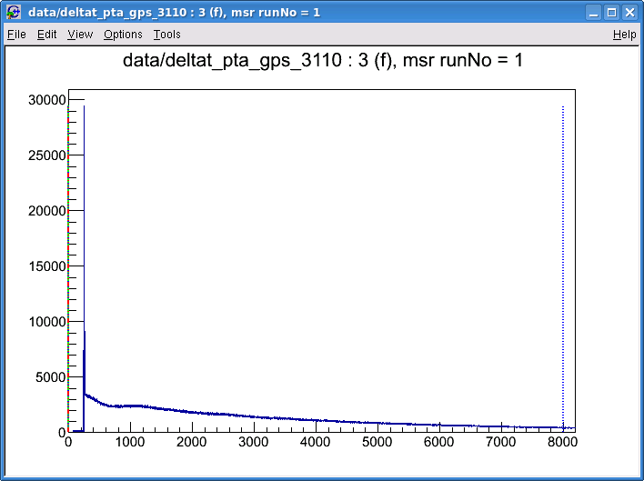
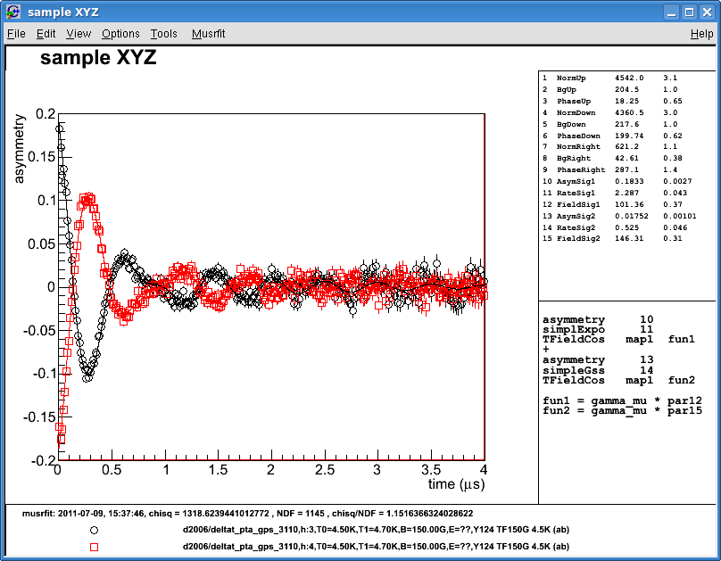
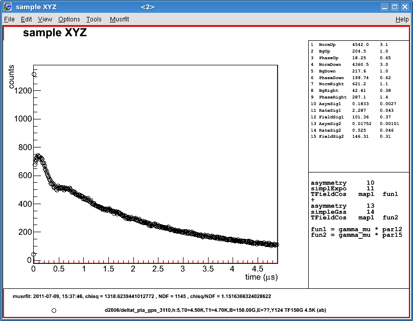
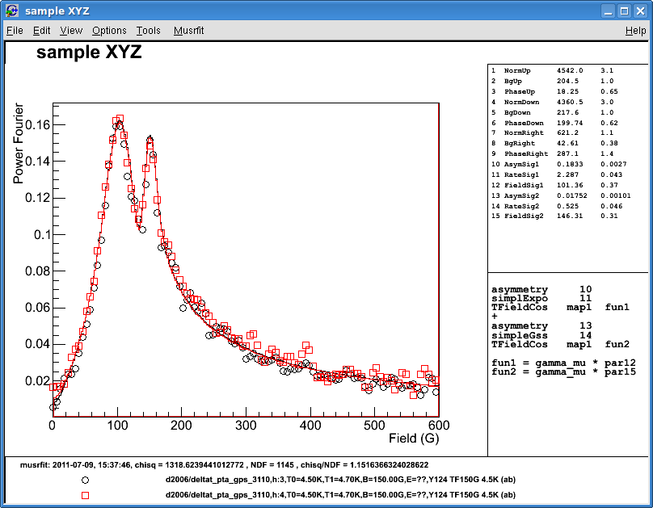
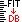
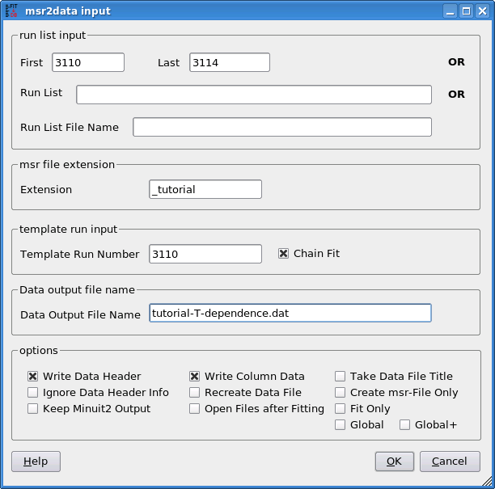

musrfit Single-Histogram-Fit Tutorial
The μSR-data-analysis process using musrfit is based on so-called msr files. These files contain all information needed for the analysis such as names of the data files, a theory function, fit and plot parameters, and so on. It is the idea of this page to explain the basic use of an msr file and the different programs of the musrfit suite using the example of a single-histogram fit to time-differential transverse-field μSR data. For a complete description of all options please refer to the manual.
The example deals with a diamagnetic sample that has been measured in an applied field of approximately 150 G in the GPS spectrometer at PSI using the "transverse geometry". In this geometry the muon spin is rotated about 50° up and the field is applied parallel to the muon momentum. Hence, the relevant positron counters (to detect the spin precession) are placed above (histogram 3), below (histogram 4) and right of (histogram 5) the sample. The run numbers start from 3110.
To analyze these data (in a simple way) one starts out from the msr file 3110_tutorial.msr provided together with the source-code distribution in the sub-directory doc/examples/. This ASCII file can be edited using any text editor. For convenience the editors musredit/musrgui are provided which offer some msr-file-specific functionalities and additionally serve as front ends to the underlying programs. In the following it is assumed that the file is open within musredit.
1 The msr file
The msr file itself is divided into different blocks—a full description of the format can be found here.
In the file 3110_tutorial.msr these blocks are successively: - the title:
sample XYZ
A descriptive title of the file. - the FITPARAMETER block:
FITPARAMETER # No Name Value Step Pos_Error Boundaries 1 NormUp 4500 5 none 0 none 2 BgUp 200 1 none 0 none 3 PhaseUp 15 1 none 4 NormDown 4500 5 none 0 none 5 BgDown 200 1 none 0 none 6 PhaseDown 195 1 none 7 NormRight 600 5 none 0 none 8 BgRight 40 1 none 0 none 9 PhaseRight 285 1 none 10 AsymSig1 0.17 0.01 none 0 0.33 11 RateSig1 2.5 0.1 none 0 none 12 FieldSig1 100 1 none 13 AsymSig2 0.02 0.01 none 0 0.33 14 RateSig2 0.5 0.1 none 15 FieldSig2 150 1 noneThe list of parameters used in the theory function to describe the set of data. Each parameter has a number, a name, an initial value and an initial step (for the fitting process). If a parameter should be fixed, the initial step is set to 0. After a fit (see below), this block contains the determined parameter values and uncertainties (in the Step column). If asymmetric errors are determined, these will be listed in the Step column (negative) and the Pos_Error column (positive). Optionally, lower and upper boundaries for the parameters can be specified as shown above.
The meaning of the parameters above is explained in the following:
Since a single-histogram fit should be done, some histogram-specific parameters are needed. These are a normalization constant (parameter 1), a parameter describing the background of uncorrelated events (parameter 2) and the initial phase of the spin precession with respect to the detector (parameter 3). As stated above, there are three histograms containing useful information ("Up", "Down", "Right"); hence, this set of parameters has to be present for each of them (parameters 1–9).
The remaining parameters are used to model the decay asymmetry which is assumed to be equal for all histograms. In this example one has two signals (e.g. from the sample and the sample holder), each with an amplitude (parameters 10 and 13), a depolarization rate (parameters 11 and 14) and a mean field (here given in Gauss, parameters 12 and 15). - the THEORY block:
THEORY asymmetry 10 simplExpo 11 (rate) TFieldCos map1 fun1 (phase frequency) + asymmetry 13 simpleGss 14 (rate) TFieldCos map1 fun2 (phase frequency)
The THEORY block is used to define a fit-parameter-dependent theory function used to model the decay asymmetry. Different predefined and user-defined functions can be combined here. Theory lines following each other are multiplied and the + sign is used to add different (here: two) signal contributions. The numbers are the parameter numbers according to the FITPARAMETER block. map and fun are used to refer to histogram-dependent parameters and to interrelate fit parameters, respectively (see below). - the FUNCTIONS block:
FUNCTIONS fun1 = gamma_mu * par12 fun2 = gamma_mu * par15
Here functions interrelating different fit parameters and predefined constants can be defined for the use in the THEORY block. In the example, the functions are used to calculate the muon-spin-precession frequencies for the given fields (ν = γμB/2π). One function is used for each signal. Altogether, the theory function defined above is A(t) = p10 e-p11t cos(φiπ/180 + γμ p12 t) + p13 e-(p14t)2/2 cos(φiπ/180 + γμ p15t), where the p are the parameters in the FITPARAMETER block and φi = p3, p6, p9 depending on the histogram as shall be seen later. - the RUN block:
RUN data/deltat_pta_gps_3110 PIM3 PSI PSI-BIN (name beamline institute data-file-format) fittype 0 (single histogram fit) norm 1 backgr.fit 2 lifetimecorrection map 3 0 0 0 0 0 0 0 0 0 forward 3 data 1 8000 t0 1 fit 0 4.9 packing 20
The RUN blocks are used to collect information on the data to be analyzed. Specifically, these are:-
RUN data/deltat_pta_gps_3110 PIM3 PSI PSI-BIN (name beamline institute data-file-format)
the path to the data file and the file format (NEXUS, ROOT-NPP, ROOT-PPC, PSI-BIN, PSI-MDU, WKM, MUD, MDU-ASCII) -
fittype 0 (single histogram fit)
the fit type (0 = single-histogram fit) -
norm 1
the number of the fit parameter representing the normalization constant -
backgr.fit 2
the number of the fit parameter representing the background -
lifetimecorrection
a tag that specifies whether the histogram is plotted (line is not present) or the asymmetry (line is present) -
map 3 0 0 0 0 0 0 0 0 0
the definition of the maps used in the THEORY block—RUN-block-specific parameters are given here; in this example, map1 is substituted by parameter 3 in the THEORY block for this RUN block and map2, map3, and so on are undefined. -
forward 3
the histogram number; in this example 3 corresponds to the histogram of the "Up" positron counter -
data 1 8000
start and end bins of the range containing useful data in the histogram (to be adjusted, e.g. by usingmusrt0, see below) -
t0 1
histogram bin corresponding to the time zero (muon implantation time) (to be adjusted, e.g. bymusrt0, see below) -
fit 0 4.9
start and end times (in μs) defining the fit range.
In case the fit range exceeds the range of useful data (specified above using the data tag), eventually this data range is used as fit range. -
packing 20
the packing of the histograms (in histogram bins)
Since the data of three histograms is to be analyzed, the file contains not only one but three RUN blocks—each defining the histogram-specific information following the example given above.
-
- the COMMANDS block:
COMMANDS MINIMIZE MINOS SAVE
In the COMMANDS block, a sequence of operations that should be performed is defined. Here, the requested operations are the minimization of χ2 (MINIMIZE), the calculation of asymmetric errors (MINOS) as well as saving the found parameter values and uncertainties to themsrfile (SAVE). A full description of the possible commands can be found here. - the FOURIER block:
FOURIER units Gauss # units either 'Gauss', 'MHz', or 'Mc/s' fourier_power 10 apodization WEAK # NONE, WEAK, MEDIUM, STRONG plot POWER # REAL, IMAG, REAL_AND_IMAG, POWER, PHASE phase par3 range 0.0 600.0
The FOURIER block is used to define basic settings for the Fourier transform available inmusrview. These are:-
units Gauss # units either 'Gauss', 'MHz', or 'Mc/s'
the units of the Fourier domain -
fourier_power 10
the number of data points used for the discrete transform, here 210=1024 -
apodization WEAK # NONE, WEAK, MEDIUM, STRONG
the apodization to be used -
plot POWER # REAL, IMAG, REAL_AND_IMAG, POWER, PHASE
what should be plotted (real part, imaginary part, and so on) -
phase par3
the initial phase of the input data is given here in degrees. Optionally, a phase parameter from the FITPARAMETER block can be given, here par3 takes the value of parameter 3. -
range 0.0 600.0
the start and end points of the range of the Fourier transform in the units specified above
-
- the PLOT block:
PLOT 0 (single histo plot) runs 1 2 range 0 4 -0.2 0.2
The PLOT block defines which data (corresponding to the given RUN blocks) is plotted whenmusrviewis called. In the given example, a canvas would be drawn containing the (life-time-corrected) data of the first two RUN blocks ("Up" and "Down" positron counters). The abscissa would range from 0 to 4 μs, the axis of ordinates from -0.2 to 0.2.
It is possible to define more than one PLOT block. Each PLOT block corresponds to a separate canvas. Therefore, the second PLOT block in the filePLOT 0 (single histo plot) runs 3 use_fit_ranges
produces an additional window containing the (not life-time-corrected) data of the third RUN block ("Right" positron counter). The abscissa ranges from 0 to 4.9 μs (according to the fit range given in the RUN block). - the STATISTIC block:
STATISTIC --- 2011-07-09 10:58:44 chisq = 1348.1764586409397, NDF = 1146, chisq/NDF = 1.1764192483777833
This block is the last block of amsrfile. It contains some information on the fit: the date and time as well as the absolute and normalized values of χ2 and the number of degrees of freedom in the fit.
These information only have a meaning if the fitting procedure has been executed at least once and the fit has converged!
2 Determine t0 and the data range using musrt0
Before the given model can be fitted to the data, the data ranges and time zeros of the different RUN blocks have to be set correctly. This can be achieved using musrt0. Starting this program by selecting the button in musredit or calling from a terminal musrt0 3110_tutorial.msropens an interactive window plotting the data of the first RUN block:

The green line (at bin 1) represents time zero, the blue lines the start (at bin 1) and end (at bin 8000) of the data range and the optional red lines give the limits of the background range (if the background shall not be determined by the fit). All lines can be either dragged to reasonable locations or set by pressing the corresponding keyboard shortcuts. In the example the time zero can be set by pressing T (which moves the green line to the bin containing the maximum number of counts), the start of the data range should be set to about five bins later by zooming into the graph around bin 250 and pressing d when the cursor is found at a suitable location:
After all lines have been adjusted for the first histogram, one can go on to the second by pressing q. This procedure is repeated until all ranges have been set correctly. When finished with the last histogram the new t0 and data-range values will be written to the
msr file.
A full description of musrt0 can be found here.
3 Fit the model to the data using musrfit
Now that the basics of the msr file have been introduced and the necessary adjustments have been done one can proceed with fitting the specified model to the data. This is done by selecting the button in musredit or calling from a terminal musrfit 3110_tutorial.msrAfter the fitting procedure has finished the
msr file is updated and contains the newly determined values of the fit parameters.
4 View the data and the fit using musrview
The data and the corresponding fit can be visualized by choosing in musredit or calling from a terminal musrview 3110_tutorial.msrThis creates the windows according to the given PLOT blocks in the
msr file:

The basic features of
musrview can be found in the Musrfit menu. They include: - export the shown data and the model to an ASCII file with comma-separated values
- presenting the difference between the shown data and the model (keyboard shortcut: d)
- calculate and show the Fourier transform of the shown data (keyboard shortcut: f), e.g. for the asymmetry of the "Up" and "Down" detectors:

5 Process multiple msr files using msr2data
This short introduction is concluded by calling attention to the program msr2data. As the name indicates the main purpose of this program is to extract the FITPARAMETER-block information from multiple msr files with the same structure and to summarize them in a single ASCII file (either in TRIUMF DB format or simple columns). However, as described in detail in the manual, it is not only possible to collect data from msr files but also to create new msr files from a template and to process these files using musrfit on the fly.Assuming the successive runs 3111 through 3114 can be analyzed using the same model introduced above for run 3110 (e.g. in the case one has done measurements at different temperatures) one can use the file 3110_tutorial.msr as template, generate the files 3111_tutorial.msr through 3114_tutorial.msr with the corresponding updates in the RUN blocks, call for each one
musrfit and finally summarize the FITPARAMETER-block information of all processed files in an ASCII output file tutorial-T-dependence.dat (simple columns). If further information on the temperature or the applied field is available in the data files these will be included as well in the resulting ASCII file.From the terminal this would be done as follows:
msr2data 3110 3114 _tutorial fit-3110 -o tutorial-T-dependence.dat dataTo achieve the same in
musredit one selects  and fills the form accordingly:
6 Further reading
This page only summarizes the very basic features and options of the programs contained in themusrfit suite. For a complete description please refer to the manuals of -
musrfit(includingmusrfit,musrview,musrt0and the full description of themsr-file format) -
musredit -
msr2data.

| I | Attachment | Action | Size | Date | Who | Comment |
|---|---|---|---|---|---|---|
| |
msr2data.png | manage | 34 K | 20 Jul 2011 - 13:34 | UnknownUser | |
| |
musrt0-1.png | manage | 19 K | 20 Jul 2011 - 13:38 | UnknownUser | |
| |
musrt0-2.png | manage | 19 K | 09 Jul 2011 - 15:17 | UnknownUser | |
| |
musrview-1.png | manage | 45 K | 09 Jul 2011 - 15:48 | UnknownUser | |
| |
musrview-2.png | manage | 36 K | 09 Jul 2011 - 15:48 | UnknownUser | |
| |
musrview-3.png | manage | 42 K | 09 Jul 2011 - 16:01 | UnknownUser |
This topic: MUSR > TutorialSingleHisto
Topic revision: 02 Sep 2011, wojek
Topic revision: 02 Sep 2011, wojek
Ideas, requests, problems regarding PSI Wiki? Send feedback

{kind=link}
{kind=link}
{kind=link}
{kind=link}
{kind=link}
{kind=link}
{kind=link}
{kind=link}
{kind=link}
{kind=link}
{kind=link}
{kind=link}